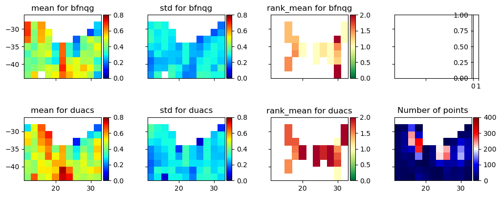
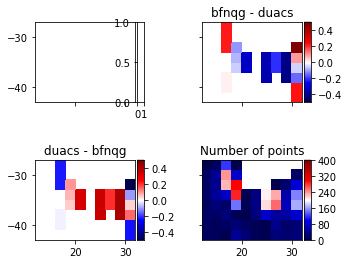

Run front diagnostics#

Velocity metrics package illustration: Run front diagnostics#
Agulhas, BFN-QG#
Authors: Datlas Copyright: 2024 Datlas License: MIT
Run front diagnostics: Agulhas, BFNQG currents maps
Run front diagnostics: Agulhas, BFNQG currents maps
The notebook aims to illustrate how to run the velocity metrics. Here, the example uses surface current maps produced by the BFN-QG in the Agulhas region.
The notebook aims to illustrate how to run the velocity metrics. Here, the example uses surface current maps produced by the BFN-QG in the Agulhas region.
[1]:
import velocity_metrics.fronts.compare_fronts_vel as compare_fronts_vel
import velocity_metrics.fronts.box_metrics as box_metrics
import warnings
warnings.filterwarnings('ignore')
import sys
sys.path.append('../')
from src import utils
Parameters#
Parameters and paths#
[2]:
dirpath = '../dc_data/DC_example_BFNQG_Agulhas/'
par_out = {"pattern": f'frontsvel_Agulhas_BFNQG_0m',
"outdir": dirpath + 'fronts_outputs_bfnqg'}
front_rep = 'fronts_Agulhas/'
front_pattern = 'seviri_sst_woc_t1'
gradient_threshold = 0.01
par_fronts = {"dir_front": dirpath+front_rep,
"pattern": front_pattern,
"gradient_threshold": gradient_threshold}
data_type = dirpath + 'dictionnaries/data_type_metric_illustration_bfnqg.json'
region = dirpath + 'dictionnaries/region_metric_illustration_Agulhas.json'
first_date = '20190101T000000Z'
last_date = '20190120T000000Z'
outputplot = '../results/metrics_illustration/'
Compute front diagnostics#
[3]:
compare_fronts_vel.run(par_out, par_fronts, data_type,
region=region, depth=0,
first_date=first_date,
last_date=last_date,
syntool=False, ext='json')
Percent: [############################--] 95.00%, ,
100%|██████████| 488/488 [00:12<00:00, 38.91it/s]
Compute box statistics#
[4]:
dic_list = box_metrics.run(dirpath+'dictionnaries/config_fronts.json', 2,
first_date='20190110T000000Z',
last_date ='20190120T000000Z',
output_dir=outputplot,
plot=False)
Plot box statistics#
[5]:
path = outputplot + 'bfnqg_duacs_2019-01-10T00:00:00.000000Z_2019-01-20T00:00:00.000000Z_mean.nc'
dic_list = box_metrics.run_plot(path,
dirpath+'dictionnaries/config_fronts.json',
size=2,
dir_out=outputplot)


[ ]: